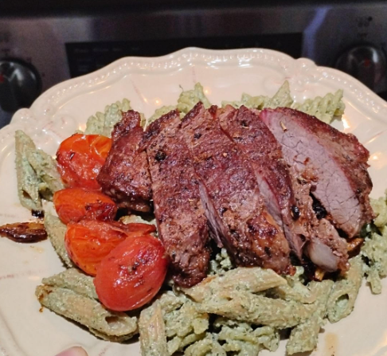

Pesto Pasta with Steak
This Pesto Pasta with Steak is a flavorful and satisfying dish that combines tender steak slices with al dente pasta and a vibrant pesto sauce. It's perfect for a quick weeknight dinner or a special occasion meal.

Ingredients
- 8 oz pasta (penne, fettuccine, or your choice)
- 1 lb steak (sirloin, ribeye, or your choice)
- 2 cups fresh basil leaves
- 1/2 cup grated Parmesan cheese
- 1/3 cup walnuts or pine nuts (I find that walnuts add a nice flavor)
- 2 cloves garlic
- 1/2 cup olive oil
- Salt and pepper to taste
- Cherry tomatoes (optional, but really are needed for a pop of color and flavor)
Let's start cooking!
- Start by making the pesto sauce. In a food processor or blender, combine the basil leaves, Parmesan cheese, walnuts (or pine nuts), garlic, and olive oil. Blend until smooth and creamy. Season with salt and pepper to taste. Set the sauce
- Cook the pasta according to package instructions until al dente. Drain the pasta but save about a cup of pasta water for later and set aside.
- In a large skillet, cook the steak over medium-high heat until browned and cooked to your liking. Remove from heat and let it rest for about 10 minutes before slicing.
- Using the pan you just cooked the steak in, leave the heat on low and throw the cherry tomatoes in after washing them. Let them cook until the skins start to blister and they release their juices.
- In a large bowl, combine the cooked pasta and pesto sauce. Toss until everything is well coated.
- Now put your desired amount of pasta in a bowl and add on sliced steak and the pan roasted cherry tomatoes on top.
- Serve immediately, garnished with extra Parmesan cheese and fresh basil if desired. Enjoy!
Back to recipes!